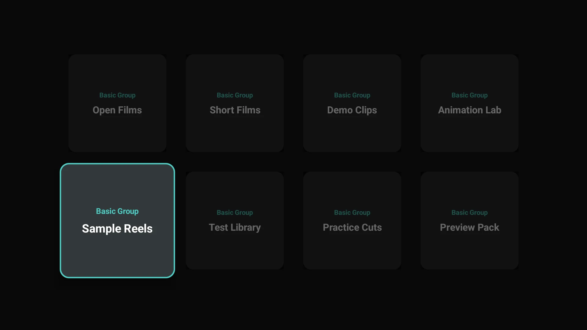

How to watch Telegram videos on Android TV and Google TV
By Abin Sabu, developer of gPlayer · Updated 2 November 2026
Telegram does not publish an app for Android TV or Google TV, and its Android phone app is not built for a TV remote. You can still watch the videos, photos and documents in your Telegram chats on your TV. Here are four ways, easiest first.
Disclosure: I build gPlayer, the first option below. The other three don't use any app of mine.
1. Install the gPlayer APK
gPlayer is a free Telegram media player made for the TV remote. It signs in with your own Telegram account through Telegram's official TDLib library, so your chats, channels and Saved Messages appear as a grid you can browse with the arrow keys. It runs on Android TV and Google TV devices with Android 5.0 or later.
gPlayer is not in the Google Play Store, so you install it from its APK file:
- On your TV, install a downloader app from the Play Store, for example Downloader by AFTVnews.
- Allow that app to install unknown apps: Settings → Apps → Security & restrictions → Unknown sources. On Google TV you may first need to turn on Developer options (Settings → System → About, then select Android TV OS build seven times).
- In the downloader app, enter effrix.com/releases/tgPlayer_v3.4_304_release.apk and install the file.
- Open gPlayer, enter your phone number with the remote, then the login code Telegram sends to your phone.
- Pick a chat, channel or Saved Messages, choose a video and press play.
You can also download gPlayer v3.4 (APK, 37 MB) on a computer and copy it to the TV with a USB drive and a file manager.

On a Fire TV? gPlayer is in the Amazon Appstore there, see how to watch Telegram on Fire TV.
2. Sideload Telegram's Android app
Telegram offers its Android app as an APK at telegram.org/android, and you can install it on the TV the same way as above. It works, but it is the phone interface: small text, touch-sized buttons and no proper remote navigation, so most people add a mouse-pointer app to use it.
3. Cast your phone screen
Most Android TV and Google TV devices have Chromecast built in. On an Android phone, open the Google Home app, choose your TV and select Cast my screen, then play the video in Telegram. Quality depends on your Wi-Fi, and your phone stays busy while you watch.
4. Use Telegram Web in a browser
Install a browser on the TV and go to web.telegram.org. You sign in by scanning a QR code with your phone. Playback works, but moving around a desktop web page with a remote is slow.
Is it safe to sign in to Telegram on a TV app?
gPlayer signs in the same way as any Telegram app, through Telegram's official TDLib library. Your login and media go directly between the app and Telegram's servers; Effrix does not receive or store them (see the gPlayer privacy policy). You can end the TV session at any time from Telegram on your phone: Settings → Devices → select the session → Terminate.
Questions
Is there an official Telegram app for Android TV?
No. As of November 2026, Telegram does not publish an app for Android TV or Google TV. gPlayer is an independent app built on Telegram's official TDLib library.
Is gPlayer on Google Play?
No. gPlayer is published in the Amazon Appstore for Fire TV and as an APK on this site for Android TV, Google TV and other Android devices. It is the same build in both places.
Does gPlayer cost anything?
No. gPlayer is free, has no ads, and its source code is on GitHub under the MIT license.
Which videos can I watch?
Only what is already in your own Telegram account: your chats, the channels and groups you belong to, and Saved Messages. gPlayer does not download from other sites.